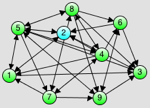

Finding shortest paths
How do you find your way around?
|
If you want to go or drive somewhere, how do you find the shortest path to your destination? Sure thing, you fire up an application like Google Maps or use a navigation system. Or maybe you prefer old-school paper maps to find your way. Using a map, you can easily tell a good, if not shortest, path between two locations. That's because humans are fairly good at that visual task, given that only adjacent locations on the map are connected. But try to find the shortest path between the location 2 and all other locations in the example to the right. Not easy, eh?
|
 |
Can computers help?
 |
Maybe we should leave tedious tasks like that to computers which are good at solving them. First of all they need an abstraction of the real world, objects in a format they can "understand". For maps, computers often use graphs, where locations (e.g. cities) are represented by nodes and links between locations (e.g. roads) are represented by edges. The above image actually depicts a graph where numbered nodes are connected by edges (lines).
|
Yes, but how are they doing it?
Once the computer knows about the geographic locations and their connectivity, how is it going to find the shortest path between two arbitrary locations? How would you "tell it" to do so? Find all possible paths between two points and compare their lengths? That could take a while for distant locations with many intermediate points, even for a fast computer. There must be a better way? There is.
They run algorithms.
One fairly simple, yet powerful, way of finding the shortest paths between a single start node and all other nodes in a graph is to use Dijkstra's algorithm. Don't be afraid by the fancy word "algorithm". Think of an algorithm as an unambiguous plan to be followed by a computer to solve a certain problem. A given input (e.g. a graph) is processed by the algorithm to calculate a result (e.g. single-source shortest paths). Coming up with elegant and efficient algorithms is a challenging task and an ongoing area of research.
Dijsktra's algorithm finds shorter shortest paths first.
So how does Dijsktra's algorithm work? Instead of checking all possible paths between the start and all other locations, it first finds the shortest paths to nodes which are closer to the start (the shorter shortest paths). It then uses that knowledge to find the paths to more distant locations.